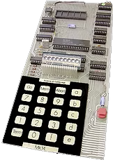
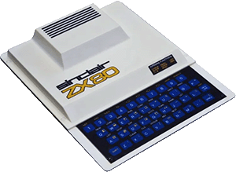
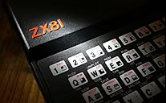

1962 to 1981: Prehistory
Taken from zxgoldenyears.org — written by R. Tayler
To understand the history of the ZX Spectrum, we need to go back to Cambridge in the early 1960s, where Clive Sinclair was selling mail order amplifier kits under the name Sinclair Radionics. As with his later computers, reliability was never a strong point of his company’s designs, but in a time of budding electronics ‘hobbyists’, the business steadily grew.
By the 1970s, Radionics was making a name as a calculator manufacturer. Despite its Executive model tending to explode if left on for too long, the company prospered, but the launch of its dreadful Black Watch in 1976 triggered a dramatic collapse. A bail-out came from the National Enterprise Board in exchange for a majority share in the business, but by the late 70s the company had losses running into the millions. Fortunately, Clive Sinclair had a lifeboat in case of such a crisis: an off-the-shelf firm called Abelsdeal (later renamed Sinclair Instruments) he'd bought in 1973, which would eventually offer a way out.
The MK14
In the summer of 1977, a young undergraduate called Ian Williamson was working at Cambridge Consultants, preparing for a move to a lucrative position at Leyland Vehicles. He had been following the new American hobby of building microcomputers from kit form and thought there might be a market for them in the UK. Ready-made computers were becoming available across the Atlantic, but were hugely expensive and beyond the budgets of British hobbyists, who tended to be younger and poorer than their American counterparts. Computer kits, on the other hand, were part of the same amateur electronics scene as crystal radio sets and more likely to find a British audience, especially as some enthusiasts were already paying around £200 for imported examples.
In his spare time, Williamson had already designed a basic device out of accumulated spare parts. With his new job impending, he knew he had no chance of developing the idea himself, so he approached Chris Curry, a member of Clive Sinclair’s team since the early 1960s, to discuss the idea. Curry saw the computer kit as ideal for Radionics' sister company, Sinclair Instruments, which had recently changed its name to Science of Cambridge and needed a new product. Following a demonstration, Sinclair and Curry provisionally agreed to buy Williamson’s design for £5000, plus royalty payments on every unit sold.

While Williamson awaited his cheque, Curry approached National Semiconductor to discuss buying the required chips. The electronics giant offered to redesign the kit using only its own parts, which would make its production cheaper and more efficient than using the hotchpotch of components proposed by Williamson. Clive Sinclair also felt this sufficiently altered the end product to obviate the need to buy Williamson’s idea.
The MK14 computer kit was released by Science of Cambridge in 1978 and became the first ever British home micro. It bore no resemblance to the modern understanding of a computer. It was a merely an educational demonstration of how a microprocessor could be interacted with via a calculator-style keypad. Presumably suffering from a degree of guilt, Sinclair paid Williamson £2000 for the rights to use his documentation with the MK14 kit.
Due to the company’s limited finances and uncertainty over the demand for such new technology, only 2000 units were originally built - and were snapped up instantly. Demand from electronics enthusiasts, tired of building radios and speakers, was tremendous. Chris Curry had seen enough and left to set up Acorn Computing. Meanwhile, Clive Sinclair negotiated his resignation from Radionics - which was now effectively government controlled following wranglings with the National Enterprise Board - and ploughed his £10,000 pay-off into Science of Cambridge.
Despite the MK14’s success, Sinclair was more interested in developing new products, such as flat screen TVs and electric cars. However, to fund these enterprises it became apparent he would have to exploit the growing consumer demand for computers. Rather reluctantly, Sinclair ordered the development of a successor to the MK14, instructing that it should be made with the cheapest components available. ‘It’ became the ZX80, which was launched in February 1980, available in kit form for £79.95 (plus a further £8.95 for the power supply). The ready-assembled model was launched a month later, priced at £99.95.
The Sinclair ZX80

The ZX80 was a huge step up from the MK14. It could be connected to a television, sported a QWERTY keyboard and used the Beginners All-purpose Symbolic Instruction Code (BASIC) programming language. This rendered it far more accessible than anything that had gone before - the first ‘proper’ home microcomputer.
On the other hand, it suffered from rushed production, cheap components and a paltry 1K of memory; but these drawbacks didn't prevent it from selling 20,000 units by October 1980. A company name-change, to Sinclair Computers, followed shortly after, demonstrating the high hopes the business had for this new technology.
Despite having no graphics capabilities, the ZX80 was even used for games, much to Clive Sinclair's amusement. The first published title was Space Intruders, which could be typed in from Tim Hartnell's book Making the Most of Your ZX80, or ordered on cassette from Ken MacDonald of Solihull.
Around this time, WH Smith's Brent Cross branch in North London was experimenting with a 'Computer Know-how' unit, an idea of market development manager John Rowland. It consisted of a Commodore PET borrowed from a local dealer, a few copies of Byte magazine and a collection of books, which were actually about calculators, because none could be found on computers. When the section was opened, the reaction was phenomenal - it was overrun and had to be roped off. This convinced Rowland to approach Sinclair to discuss selling the ZX80 in-store. Sinclair needed the support of a high street outlet and Rowland wanted a product that could reverse his company's fortunes. But as Rowland explained, "Clive suggested that rather than take the ZX80, I should wait for his new product, then still unnamed. By Christmas 1980, it was officially the ZX81."
The Sinclair ZX81

The release of a new computer coincided with another change of company name, to Sinclair Research Limited. The ZX81 was available as a kit for £49.95 and in assembled form for £69.95. Like its predecessor, it worked in black-and-white, had a dreadful keyboard and no sound. What it did have, though, was an improved version of BASIC, a display that didn’t flicker every time a button was pressed, no visible parts (most ZX80s were used with the cover off to prevent overheating), and an affordable price. It also possessed enhanced maths capabilities, which enabled it to be advertised as an educational tool. If you were serious about programming, a peripheral RAM pack was needed, but here was a machine that could bridge the gap between the technically-minded hobbyist and the man in the street.
With virtually no competition and some clever marketing that portrayed Clive Sinclair as the avuncular face of high-tech, consumers were sufficiently intrigued to bring the ZX81 into their homes by the thousand. After initial mail order sales, it was released exclusively in WH Smith, whose ‘computer corners’ were swamped by customers. A year after its high street release, 350,000 ZX81s had been sold. Within the space of a year, computers had gone from a quirky minority interest to an accessible, off-the-shelf consumer item.
Not that the ZX81 was the only computer on the scene. The American Atari 400 and 800 had been on sale for some time, but at £395 and £695 respectively they were prohibitively expensive. The Commodore VIC-20 was launched in June. It was colour, had a proper keyboard, a custom chip (the Video Interface Chip, hence VIC) and a full 5K of memory. Unfortunately, it also had a hefty price tag of £299.95. In terms of homegrown opposition, Acorn had come up with the Atom, a very capable computer with advanced graphics capabilities, which cost £125 as a kit or £150 ready-built. If Acorn had overcome appalling production problems, the ZX81 may have run into stiffer competition, but as it was it ruled virtually unopposed.
Sinclair had always planned his computers as business machines, but young men (and it was a predominantly male interest) put their new technology to another use: playing games. The ZX81 produced only the blockiest approximation of graphics, but a growing number of magazines were appearing that listed programs for users to input – perhaps the most inspired being a 1K chess program published in Your Computer.
The ZX Community
Software was also beginning to become available in cassette form as enthusiasts looked to sell their home-spun efforts to a public keen to play games on their new computers. Programmers required a high degree of discipline and ingenuity to extract a playable game from the ZX81 – skills that would hold them in good stead in future years. It was during this pioneering time that companies that would form the bedrock of the British software scene started to emerge, such as Bug Byte of Liverpool and Quicksilva of Southampton.
With things moving quickly, many computer users were keen to engage with the rest of the Sinclair-owning fraternity. Among the first people to bring them together was the writer Tim Hartnell. Since moving to Britain from Australia in 1979, he had followed the computer boom with interest, rapidly becoming the country's leading writer of programming books, as well as establishing the National ZX80/81 Users Club. One of its members, Mike Johnson, badgered Hartnell into organising a club meeting. Expecting little response, a get-together in a West London pub was announced in the club newsletter. To their amazement 70 members turned up and spent the evening animatedly discussing their shared passion.
It would be the last time the meeting was held in such inauspicious surroundings. Hartnell's book commitments were taking up all of his time, so Johnson took on the responsibility of arranging the next meeting and settled on the Central Hall in Westminster as a venue. Due to costs, advertising was limited to a small piece in PCW magazine, so only a few hundred people were expected to attend.
On September 26th 1981, the first ZX Microfair, as it called itself, opened its doors and huge crowd poured inside. An estimated 5,000 people came that day, demonstrating in no uncertain terms the growing popularity of the new Sinclair computers. The Microfair became a regular event, allowing computer owners a chance to rub shoulders, and offering shops and clubs the chance to sell their wares. Despite moving venues several times, the fairs remained popular and never lost their enthusiast vibe.
By the end of 1981, Sinclair Research was the world’s leading producer of home computers, but couldn’t afford to sit on its laurels. Rival machines were emerging, boasting colour graphics, sound, and memories many times that of the ZX81. People eagerly awaited Sinclair's response, and he didn’t disappoint.